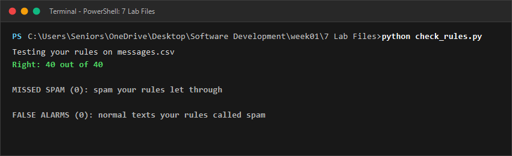
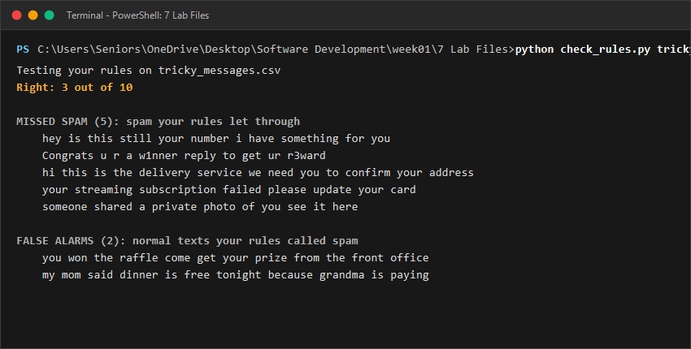

Why you are doing this: every phone has a spam filter. Before you can understand how AI catches spam next week, you are going to build a spam filter the old way, with rules you write yourself. Then you will watch it break.
Part 1 · Wednesday: Build the filter (24 points)
Step 2: Run the starter and read the score
Question (2 points): A filter that says not spam for every message got 25 out of 40. Is that a good spam filter? Why or why not?
No, it is not a good spam filter. Even though 25 out of 40 (62.5%) sounds like more than half right, this score is an illusion caused by class imbalance: 25 of the 40 test messages happened to be legitimate normal texts. The baseline filter missed 100% of the actual spam (0 out of 15 caught, 15 missed spam). A spam filter whose sole purpose is to protect an inbox from unwanted or malicious messages is completely useless if it lets every single spam message through.
Step 4: Rule Progression Table (8 points)
| Rule # |
The word or phrase |
Score after adding it |
Spam Message Caught |
| 1 |
winner |
26 out of 40 |
"You are a WINNER claim your cash prize today before it expires" |
| 2 |
claim |
29 out of 40 |
Catches 3 messages: "selected to win a free gift card claim now", "shopping spree reply WIN to claim", "free vacation claim your prize" |
| 3 |
urgent |
31 out of 40 |
Catches 2 messages: "URGENT your account has been locked...", "URGENT you owe a toll payment..." |
| 4 |
click |
35 out of 40 |
Catches 4 messages: "package could not be delivered click here", "500 dollars a day... click to learn more", "click to unlock your discount", "gaming credits... click here" |
| 5 |
prize |
36 out of 40 |
"Congratulations your number was selected in our weekly prize draw" |
| 6 |
free |
38 out of 40 |
Catches 2 messages: "FREE iPhone for the first 100...", "buy one get three free" |
Step 5: Watch for false alarms (4 points)
Question (4 points): Which message became a false alarm, and why did your rule catch it? Then delete the won rule, or change it so it no longer causes the false alarm. Explain what you did.
1. Which message and why: The legitimate message we won the game 42 to 38 became a false alarm when testing if "won" in text: return True. The rule looked for the bare substring "won" anywhere in the message. While "won" appears in lottery scams, here it was used naturally in a real-world conversation celebrating a high school sports victory.
2. What I did: I removed the bare "won" rule. The spam message containing "won" ("You have won a 1000 dollar shopping spree reply WIN to claim") was already caught cleanly by the rule if "claim" in text: return True, so removing "won" eliminated the false alarm while maintaining a 100% spam catch rate.
Step 6: Reach 35 or more (10 points)
✓ Final Score on messages.csv: 40 out of 40 (0 False Alarms, 0 Missed Spam)
Finished is_spam function:
def is_spam(message):
"""Return True if the message is spam. Return False if it is not."""
text = message.lower()
# Step 8 Exception rules (run first to prevent false alarms)
if "free throw" in text:
return False
if "class chat" in text:
return False
# Spam detection rules
if "winner" in text:
return True
if "claim" in text:
return True
if "urgent" in text:
return True
if "click" in text:
return True
if "prize" in text:
return True
if "free" in text:
return True
if "warranty" in text:
return True
if "account" in text:
return True
return False
Selected spam message & exact rule:
- Message:
Final notice your car warranty is about to expire call now
- Rule that caught it:
if "warranty" in text: return True (Line 38 in spam_rules.py).
Part 2 · Thursday: Break the filter (16 points)
Step 7: Run the tricky test (4 points)
1. Score on tricky_messages.csv: 1 out of 10 (prior to exception rules)
2. Missed spam (5): e.g., hey is this still your number i have something for you
3. False alarms (4): e.g., free throw practice is after school in the big gym (falsely caught by "free") and click the link in the class chat for the study guide (falsely caught by "click").
Step 8: Try to fix it (4 points)
Question: What two fixes did you try? Did they work? Did either fix break anything in the original 40 messages?
1. Fix 1: Added if "free throw" in text: return False before spam rules. This worked immediately to whitelist basketball practice texts without blocking actual "free" prize scams.
2. Fix 2: Added if "class chat" in text: return False before spam rules. This allowed students to share study guide links in school group chats without being flagged by the "click" rule.
Did either fix break the original 40 messages? No. Running python check_rules.py confirmed the original score remained a perfect 40 out of 40.
Step 9: Think about it (8 points, 2 each)
- You fixed two messages. Tomorrow, scammers send a new message with different words. Would your filter catch it? Why or why not?
No, the filter would not catch it. A rule-based filter only evaluates exact substring matches hardcoded by the programmer. If scammers modify their vocabulary (e.g., writing "reward" instead of "prize", or "follow link" instead of "click"), the filter has no understanding of context, intent, or fraud, so the new scam will bypass the rules completely.
- A missed spam and a false alarm are both mistakes. Which one is worse for a person using your filter? Explain.
A false alarm is far worse. If a spam message is missed, the user experiences minor annoyance and deletes it in one second. But if a legitimate message is falsely marked as spam, the user might miss a critical communication—such as a job interview offer, an urgent medical update, a note from a teacher, or an emergency text from family—causing significant real-world harm.
- How many rules do you think you would need to catch every spam text ever sent? Is that possible?
You would need hundreds of thousands or millions of rules, and it is fundamentally impossible. Human language is virtually infinite, and scammers constantly invent new slang, misspellings, and evasive techniques (like leetspeak or character substitutions). A human programmer writing manual if statements can never anticipate or keep up with every possible variation.
- Instead of writing rules, what if you gave a computer 10,000 messages already marked spam or not spam, and let it find the patterns itself? What do you think it would do better? What might it do worse?
What it would do better: An AI machine learning model calculates statistical weights across word combinations, phrase frequencies, and message structures simultaneously. It can detect subtle patterns that humans overlook and generalizes much better to new or rephrased spam messages without needing brittle keyword lists.
What it might do worse: The model operates as a statistical "black box," making it hard to explain the exact reason for an individual decision. Furthermore, if the 10,000 training messages are outdated, biased, or missing certain styles of conversation, the model can make unexpected prediction errors on edge cases it never encountered during training.
What you turn in
1. Terminal Screenshots
Screenshot 1: Final score on messages.csv (40 out of 40)

Screenshot 2: Tricky test score on tricky_messages.csv

2. Review Questions
1. Why did a filter that scored well on the class messages do badly on the tricky ones?
The filter performed well on the class messages because the rules were overfitted to the specific vocabulary found in messages.csv. When applied to tricky_messages.csv, it encountered conversational scams with zero traditional trigger words (causing missed spam) and normal texts that used trigger words like "free" and "click" in benign contexts (causing false alarms).
2. What is the difference between a missed spam and a false alarm?
A missed spam (false negative) occurs when a spam message is erroneously classified as normal and allowed into the user's inbox. A false alarm (false positive) occurs when a legitimate, normal text message is erroneously classified as spam and blocked.
3. GitHub Commit Information